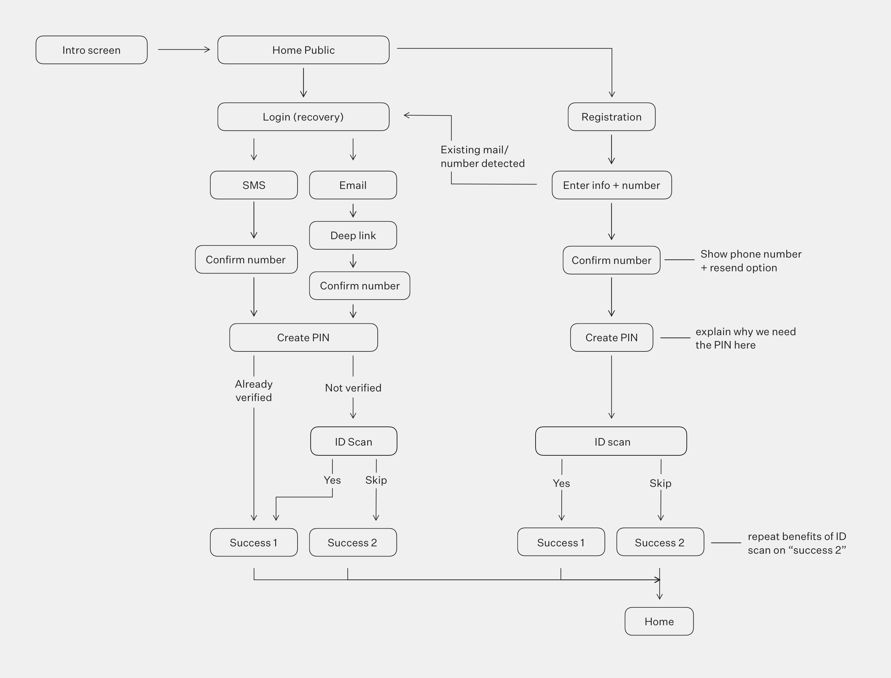
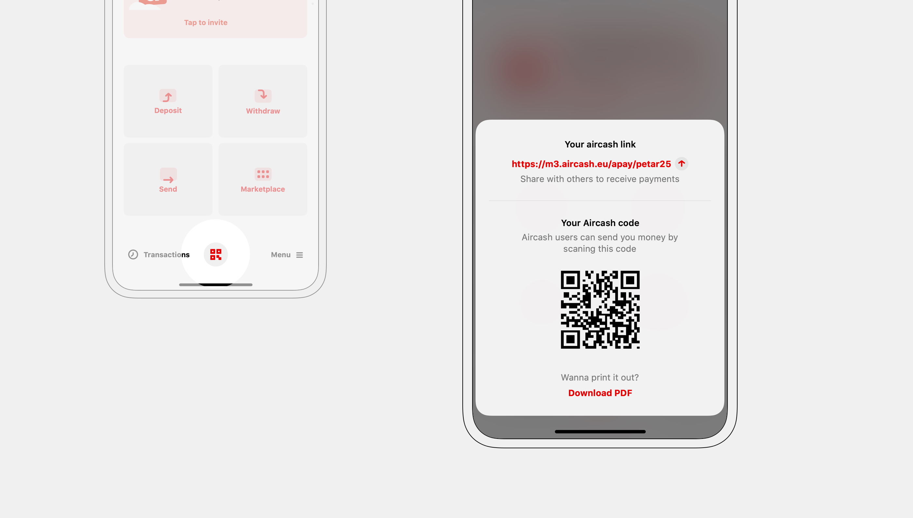
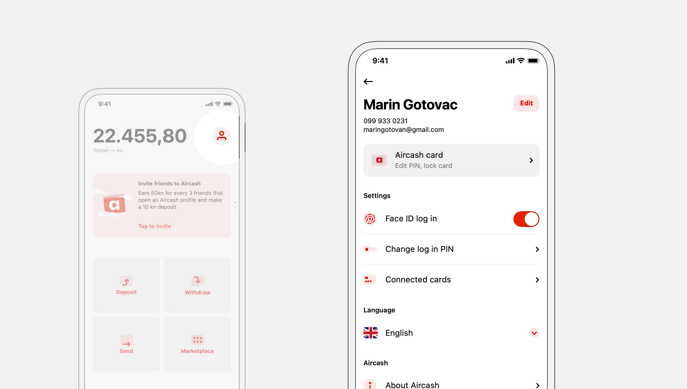
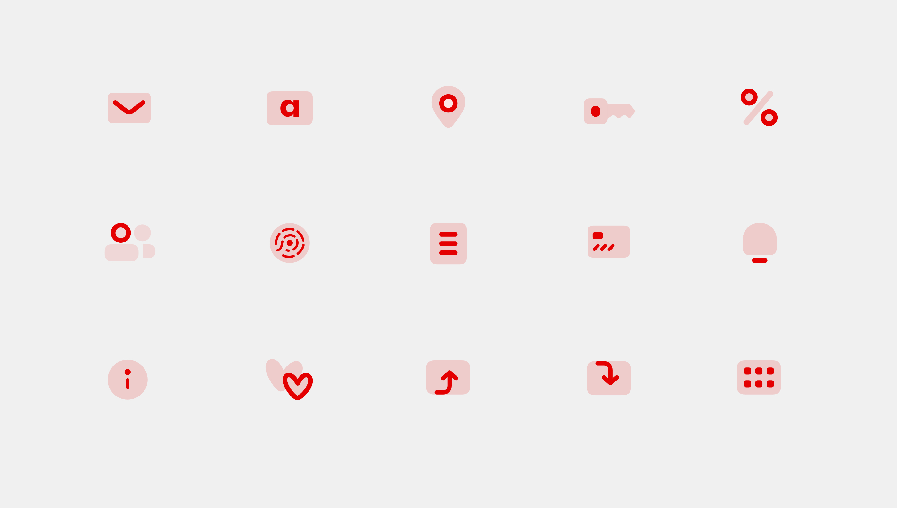

Aircash — iOS, Android UI Design, UX Design
Product design for a new type of financial institution on the market — a digital wallet requiring no bank account.
With over 100.000 users and €13mil/year in transactions, tight integration with Croatian service providers, and an EU e-money license — Aircash is one of the biggest players on the Croatian fintech scene.
The challenge
Completely rework the app with a new visual language, tackle the (non)existing information architecture, identify user needs, and define and help fulfill business goals.
My process
Working through analytics data with stakeholders I identified the user goals and business objectives. I then prepared and executed redesign and feature roadmaps in collaboration with product, development, and CEO.
Results
First, I tackled the lack of visual consistency and information architecture. After that, I worked on existing and new features impacting revenue, user base growth, and user retention.
As a result, the user base grew by +1000%, with weekly user events growing by +360%.
Information Architecture
The idea was to make the most used features accessible while having in mind the business goals. Analytics and business objectives defined, complemented with interviews and real-life observation, defined user goals. I designed detailed user flows for every section.
Onboarding user flow
"Deposit", "withdraw", and "send" were extracted to the home screen. Now, all money operations are accessible immediately after opening the app.
To increase revenue, the marketplace was shown on the home screen, incentivizing use.
Adding biometric login removed pain points in the initial phase of each user journey.

Side-menu type navigation was kept in the redesign to reduce development costs, but the "open" button was moved to the bottom, improving usability.

A user-specific Aircash-code was added to the home screen — incentivizing user-to-user transactions and increasing revenue. Other users can open a link or scan a QR code to send payments.
App and user settings were moved to the profile section, accessible from the homescreen.
Transactions
Money is instantly sent anywhere in the world via a phone number, along with a nice message. Users can choose a recipient from their phonebook — if they are a registered Aircash user.
First-state provides instructions — on every feature.
Free top-up is done with card or cash — at thousands of locations. This is a feature most competitors don't have — they limit their users with top-up fees or a small location number.
Through a partnership with an Intesa Sanpaolo group bank, PBZ, Aircash users can use ATMs for money withdrawal — without a bank account. Withdrawal is done by entering a code generated in the app — faster than using a regular card.
Partner locations are always a tap away when needed.
Money can also be withdrawn at the aforementioned locations. A barcode is generated and shown to the cashier — similar to depositing money — and users get cash in return.
New services
To attract new and keep existing users, I expanded on the "digital wallet" idea. Features such as utility bills payment, parking payment, and loyalty card scanning consolidated the financial needs of our users at a single point.
With Aircash Pay users can quickly pay invoices, utility bills, or send money to other Aircash users — by scanning a QR code.
Users are primed for permissions.
All states are clearly communicated.
Adding Parking payment simplified our users' lives — instead of using city-specific apps or paying with cash, they can pay with their Aircash wallet.
Fun micro-animations reward users for entering registration data.
The user's location is automatically retrieved, making paying for parking possible with a single tap. A ticket can be purchased for a longer duration as well.

Increasing userbase through referrals
Users can invite their friends with one tap — sending an SMS with the link. Three invited users have to top-up their accounts to complete the referral. The referral rate was over 7%.
"Waiting" number incentivizes users to invite as many of their contacts as they can.
The main challenges were showing the statuses of invited contacts and explaining the referral process to the user.
Toast shows a confirmation for a successful invite.
Welcoming new users
Even without an account, new users can open and explore the app, incentivizing account creation.

Revised onboarding simplified and sped up the process of opening an account. A clear progress indicator is shown throughout the whole process.
Tying it together with a design system
The visual language was unified across both platforms, while adhering to iOS and Android design guidelines.
Simple and playful were the directions I took for iconography — diverging from main competitors, banking applications.
System fonts were used together with a simple color palette to keep the interface simple and usable.
— thank you